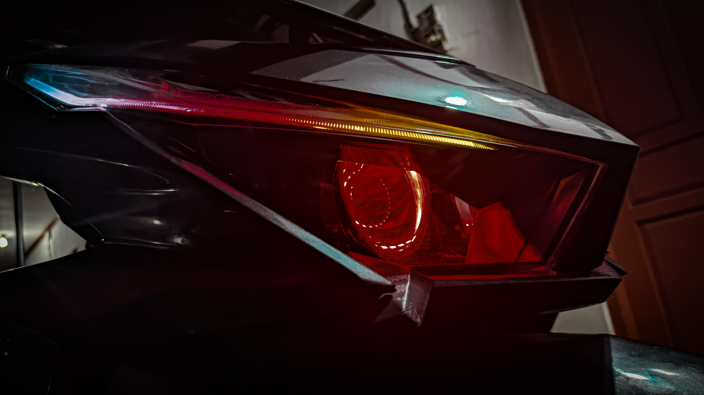

Galeri Hasil Kerja
Lihat beberapa proyek lampu motor yang telah kami selesaikan. Dapatkan inspirasi untuk motormu!



Pencahayaan Motor Maksimal, Tampilan Menawan!
Tingkatkan performa pencahayaan dan estetika motormu bersama kami.
Lihat Jasa Kami Hubungi Kami via WhatsAppUpgrade pencahayaan motormu dengan teknologi BI-LED terbaru. Cahaya lebih terang, fokus, dan hemat daya, meningkatkan visibilitas di segala kondisi.
Ubah tampilan stoplamp motormu menjadi lebih futuristik dengan efek running text yang bisa disesuaikan. Tampil beda di jalan!
Modifikasi stoplamp dengan efek 'lazy' atau sequential yang elegan saat pengereman atau menyalakan sein, memberikan sentuhan mewah pada motor Anda.
Tambahkan lampu alis RGB pada headlamp motormu. Kontrol warna dan mode kedip melalui smartphone, tampil stylish dan sesuai moodmu.
Kami juga melayani berbagai modifikasi lampu lainnya sesuai permintaan, mulai dari custom DRL, lampu sein sequential, hingga upgrade kelistrikan khusus lampu.
Lihat beberapa proyek lampu motor yang telah kami selesaikan. Dapatkan inspirasi untuk motormu!

WhatsApp : +62 812-3456-7890
Instagram : @RC_COMMUNITY_ID
Alamat : KABUPATEN TANGERANG
Jam Operasional : BUKA : SABTU & MINGGU